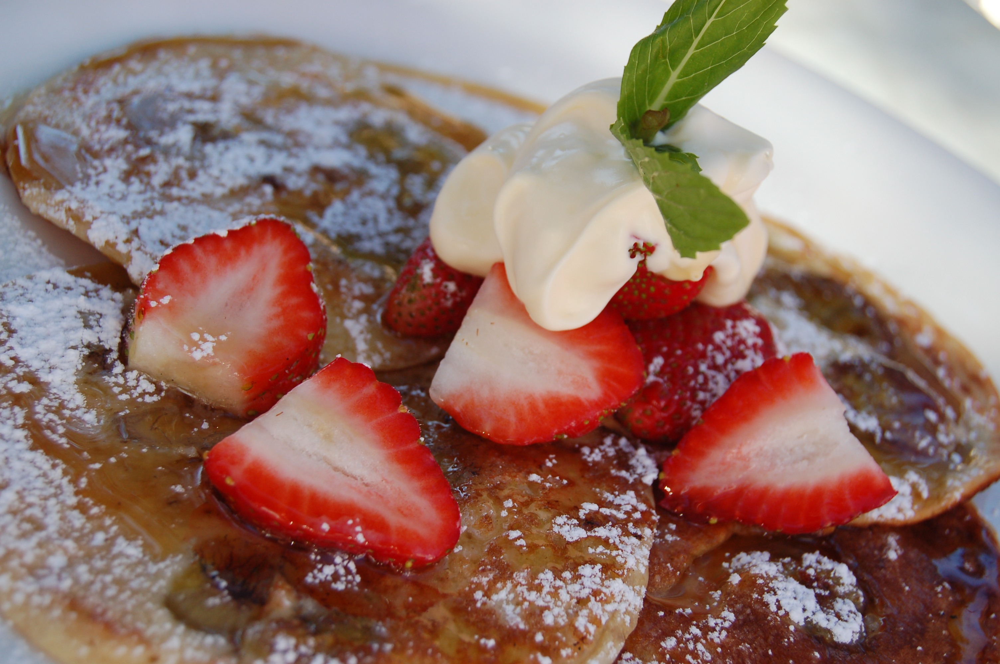

Pancakes
Description
A classic breakfast. You just need to add your favorite toppings and a cup of coffee to start the day properly.

Credits: ashish100
Ingredients for 2:
- 2 cups all-purpose flour
- 1 and a half teaspoons of baking powder
- Half a teaspoon of baking soda
- A quarter teaspoon of salt
- 1 tablespoon of sugar
- 2 eggs
- 1 and a half cup of milk
- 1 cup of greek yogurt
- 2 tablespoons of melted and cooled butter
Instructions
- Mix all the ingredients in a bowl.
- Heat a pan, melt some butter and spread it evenly.
- Put a ladle worth of batter on the pan, medium temperature.
- Flip it when you see a lot of small bubbles on it.
- Serve with the topping of your liking
Home